Nowe paczki · 30 września
61 plików razem · 16 nowych · 42 nagrania w głównym porównaniu modeli
Nowe dane są wyraźnie inne. Folder Mic Enhancements Off wygląda lepiej pod kątem zachowania tła: 0/3 plików ma ciąg dokładnych zer dłuższy niż 100 ms. W LAB TEST takie odcinki występują w 13/13 plików, trwają do około 2,4 s; mediana udziału zer w pliku to około 56%. Sam sygnał nie rozstrzyga, czy to bramka, odszumianie, edycja czy przerwy toru.
Uderzenia są teraz rzadsze: typowy odstęp wynosi około 2,1–2,2 s wobec około 0,28 s wcześniej. To daje miejsce na ogon dźwięku, ale cyfrowe wyciszanie nadal ogranicza badanie zaniku. Nie mamy jeszcze dowodu, że dłuższy ogon poprawi klasyfikację.
Najważniejszy wynik: model MFCC + regresja uczony tylko na wcześniejszych danych trafia 12/13 plików LAB, lecz odrzuca oba nowe OK z Enhancements Off. Potrzebujemy NOK nagranego w tych samych warunkach z wyłączonymi ulepszeniami. Nie należy cofać tej zmiany po to, żeby poprawić wynik starego modelu.
Co zmieniło się w pomiarach
files_zero100ms: liczba plików z ciągiem dokładnego zera >100 ms. median_floor_dbfs: dolny poziom RMS; −240 oznacza cyfrowe zero w obliczeniach. Brak twardego przesterowania nie wyklucza limitera. Wszystkie nowe pliki: 48 kHz, PCM16, dwa identyczne kanały.
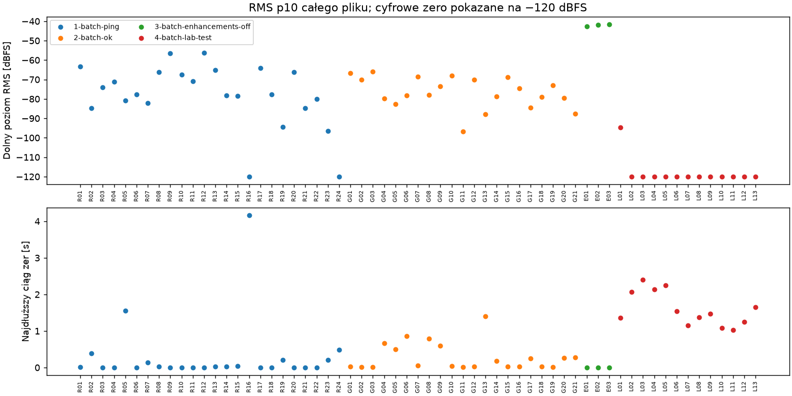
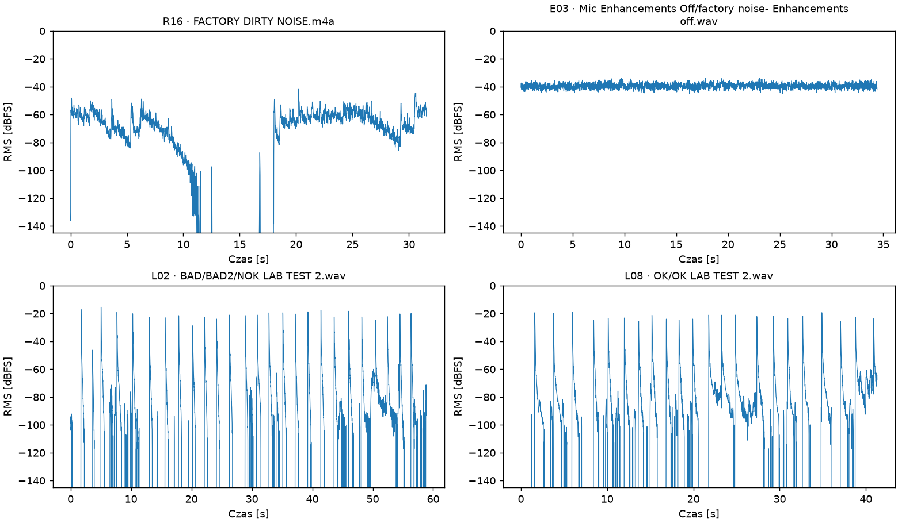
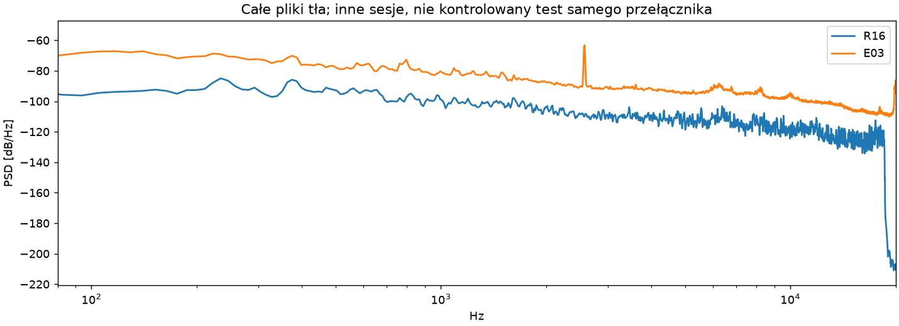
Nie jest to kontrolowane porównanie tego samego uderzenia przed/po przełączniku. Mikrofon, ustawienie i tożsamość płytki nie są potwierdzone. Brak długich zer nie dowodzi braku wszelkiego przetwarzania.
Model z wcześniejszych danych → nowe nagrania
tp = wykryte NOK; fn = przeoczone NOK; tn = poprawnie przyjęte OK; fp = błędnie odrzucone OK. Balanced accuracy to średnia wykrywalności NOK i poprawnego przyjmowania OK. AUC mierzy kolejność wyników bez wyboru progu. To nowe nagrania, nie potwierdzony test nowych płytek.
Oddzielnie dla obu dostaw
Enhancements Off zawiera tylko OK i tło: nie można obliczyć wykrywalności NOK. Wszystkie modele akustyczne mylą oba OK. W LAB wszystkie pliki mają ten sam format PCM, więc sam kodek nie wystarcza do ich rozdzielenia; nie wyklucza to różnic tła i sposobu pomiaru.
Łącznie ze starszymi danymi: wpływ ID
- same_BAD2: Nowe BAD2 = stare Bad_2; nowe OK = OK_1. Stare Bad_1 pozostaje osobną płytką.
- new_BAD2_merge_old: Nowe BAD2 jest nowe; stare Bad_1 i Bad_2 traktujemy jako jedną sztukę. Nowe OK = OK_1.
- new_BAD2_only_old_Bad1: Nowe BAD2 jest nowe; tylko stare Bad_1 jest pewną klasą NOK. Stare Bad_2 wyłączone. Nowe OK = OK_1.
- new_BAD2_only_old_Bad2: Nowe BAD2 jest nowe; tylko stare Bad_2 jest pewną klasą NOK. Stare Bad_1 wyłączone. Nowe OK = OK_1.
MFCC + LR daje balanced accuracy około 0,84–0,96 zależnie od scenariusza. To poszlaka użytecznego sygnału, ale zakres scenariuszy nie jest przedziałem ufności. AST nie jest tutaj lepszym wyborem. QC bez analizy widma osiąga około 0,50–0,69, więc nadal sprawdzamy ryzyko różnic warunków. Wyniku łączonego nie należy porównywać wprost z testem starego modelu na nowej dostawie.
Analizujemy wszystkie 61 plików w kontroli jakości. Model pęknięć obejmuje 42 nagrania z roboczymi etykietami OK/NOK; tło, OLD o nieznanej tożsamości i Bitten są poza głównym treningiem. To nie oznacza, że wyszczerbienie jest niewykrywalne — jest innym rodzajem defektu.
Detektor szuka nagłych wzrostów krótkookresowego RMS: ramka 10 ms, krok 5 ms, próg zależny od tła, minimalny odstęp 120 ms. Odrzuca zbyt słabe i niepełne okna. W nowych danych przyjął 258 uderzeń; nie traktujemy ich jako ręcznie potwierdzonych trafień. Model dostaje do 10 równomiernie wybranych uderzeń z nagrania: każde to 20 ms przed + 150 ms po początku, z normalizacją amplitudy. Decyzja o nagraniu to mediana wyników uderzeń, próg 0,5.
Porównujemy physics (15 cech), MFCC (26), ich połączenie (41), zamrożony AST (768). LR: C=0,1. XGBoost: 60 drzew, głębokość 2, bez strojenia na nowych danych. Skalowanie i model uczą się tylko na części treningowej. Kontrola QC używa jedynie poziomu, udziału ciszy i długości pliku, bez widma i kodeka.
W teście łączonym odkładamy całe grupy uznane w danym scenariuszu za płytki: jedną NOK i jedną OK. Dla powtarzających się odłożeń uśredniamy wynik nagrania. Są to wyniki eksploracyjne, zależne od niepotwierdzonych ID; wiele nagrań tej samej sztuki nie jest wieloma niezależnymi płytkami. Scenariusze nie wyczerpują wszystkich możliwych przypisań. Nowe OK roboczo łączymy z OK_1, ale klient może wskazać inne ID.
Krótka lista do potwierdzenia z klientem
- Czy nowe BAD/BAD2 to ta sama fizyczna płytka co wcześniejsze Bad_2, czy nowa pęknięta sztuka? Prosimy o krótkie przypisanie: folder → ID płytki → pęknięcie / wyszczerbienie / OK.
- Czy pliki w LAB TEST powstały przed czy po wyłączeniu ulepszeń? Czy LAB oznacza inne pomieszczenie, aplikację lub mikrofon? W każdym z tych 13 plików nadal są długie odcinki dokładnego zera.
- Czy OK z LAB i OK z Mic Enhancements Off to ta sama płytka? Która z poprzednich OK? Czy końcówki 2 i 3 oznaczają powtórzenie nagrania, a nie nową sztukę?
- Co oznacza angle (kąt mikrofonu czy uderzenia) oraz single point / one point (miejsce uderzania czy podparcie)? W tych ZIP-ach nie znaleźliśmy nazw no freq ani no frequency.
Najbardziej wartościowe dogranie
Po jednym krótkim nagraniu OK i każdej rzeczywiście pękniętej płytki przy tym samym mikrofonie, aplikacji, podparciu i wyłączonych ulepszeniach. Kilka uderzeń co około 2 s, kilka sekund tła przed i po, WAV bez dodatkowej obróbki. Nazwy wystarczą proste: ID płytki + OK/pęknięcie/uszczerbienie + ustawienia off. Nie potrzeba rozbudowanego formularza.
Wszystkie nowe nagrania
Zielone linie: zaakceptowane początki; złote: odrzucone kandydaty. Linie nie są pomiarem czasu zaniku.
E01 · Mic Enhancements Off/OK no enhacements off.wav
30.1 s · 11 przyjętych uderzeń · najdłuższe zero 0.000 s
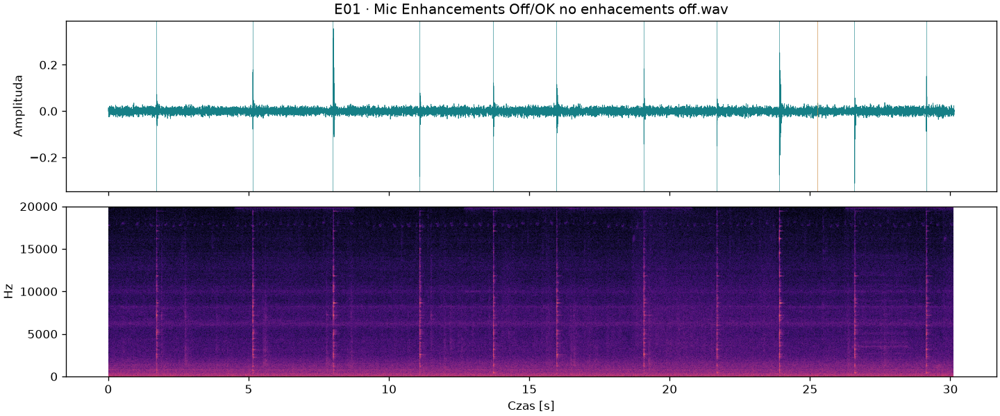
E02 · Mic Enhancements Off/Ok no enhacements off angle.wav
25.1 s · 11 przyjętych uderzeń · najdłuższe zero 0.000 s
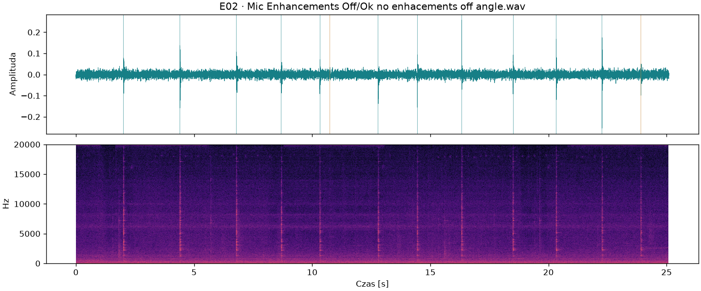
E03 · Mic Enhancements Off/factory noise- Enhancements off.wav
34.4 s · 0 przyjętych uderzeń · najdłuższe zero 0.000 s
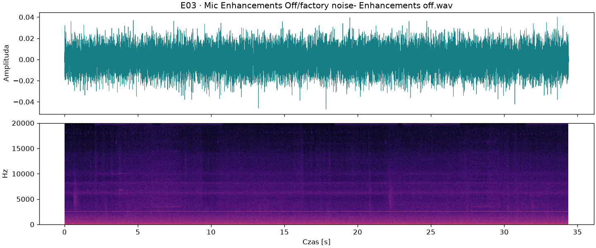
L01 · BAD/BAD2/BAD lab test angle single point.wav
36.5 s · 15 przyjętych uderzeń · najdłuższe zero 1.360 s
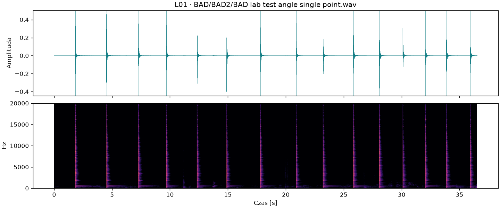
L02 · BAD/BAD2/NOK LAB TEST 2.wav
58.9 s · 25 przyjętych uderzeń · najdłuższe zero 2.067 s
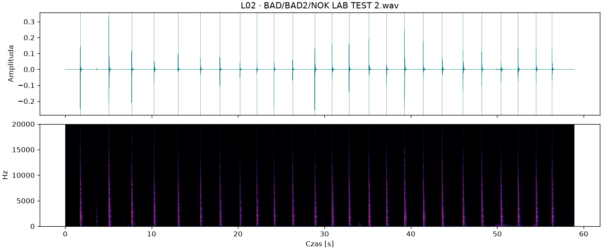
L03 · BAD/BAD2/NOK LAB TEST 3.wav
56.6 s · 25 przyjętych uderzeń · najdłuższe zero 2.401 s
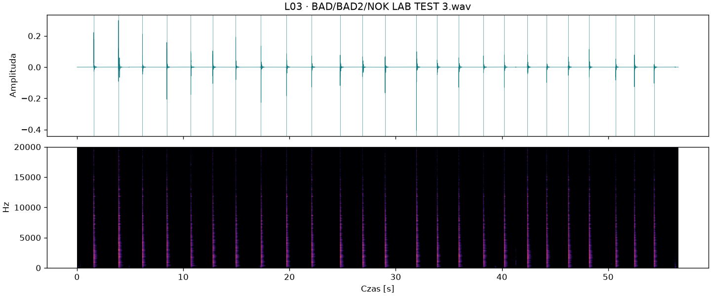
L04 · BAD/BAD2/NOK LAB TEST.wav
29.8 s · 14 przyjętych uderzeń · najdłuższe zero 2.133 s
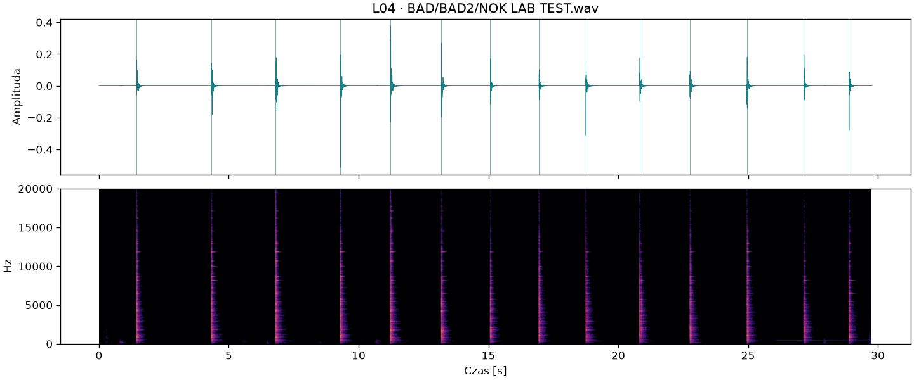
L05 · BAD/BAD2/NOK LAB Test angle.wav
55.3 s · 25 przyjętych uderzeń · najdłuższe zero 2.244 s
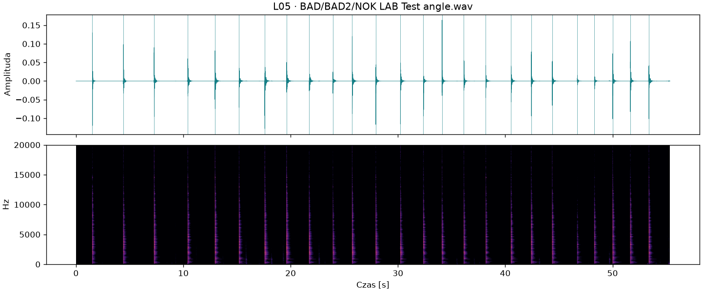
L06 · BAD/BAD2/NOK LAB test angle 2.wav
28.3 s · 14 przyjętych uderzeń · najdłuższe zero 1.546 s
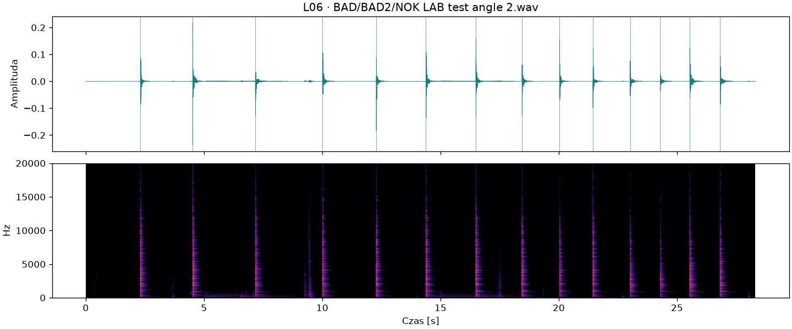
L07 · BAD/BAD2/NOK lab test angle 3.wav
42.7 s · 22 przyjętych uderzeń · najdłuższe zero 1.157 s
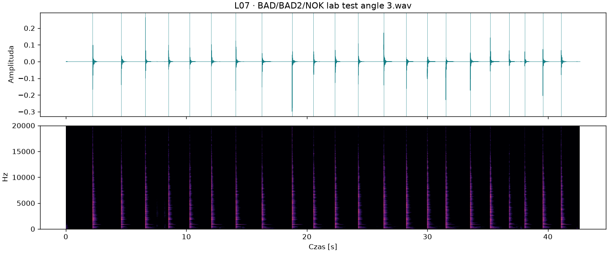
L08 · OK/OK LAB TEST 2.wav
41.3 s · 22 przyjętych uderzeń · najdłuższe zero 1.369 s
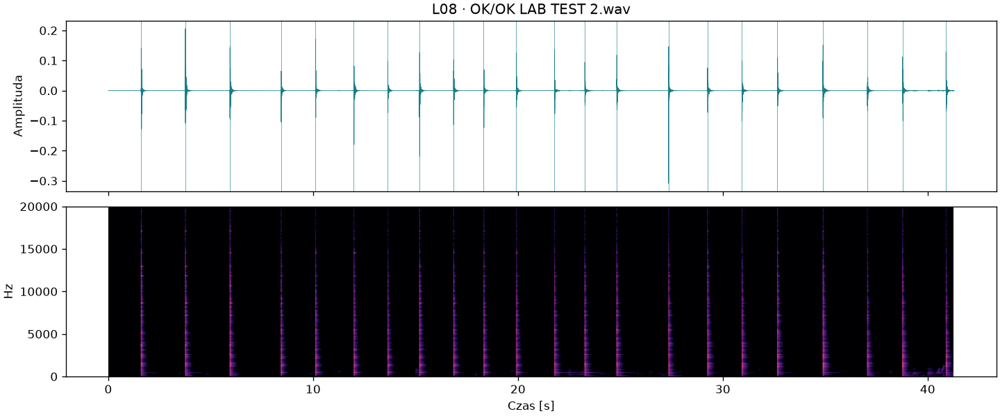
L09 · OK/OK LAB TEST 3.wav
35.8 s · 17 przyjętych uderzeń · najdłuższe zero 1.475 s
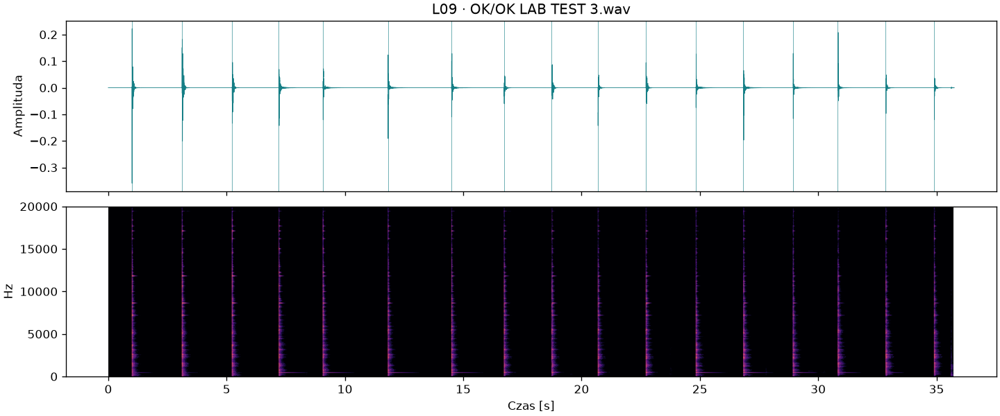
L10 · OK/OK LAB TEST ANGLE 2.wav
35.0 s · 16 przyjętych uderzeń · najdłuższe zero 1.079 s
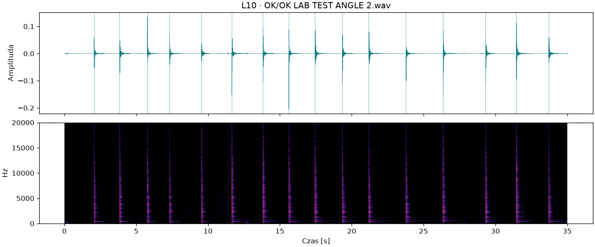
L11 · OK/OK LAB TEST ANGLE.wav
24.4 s · 8 przyjętych uderzeń · najdłuższe zero 1.027 s
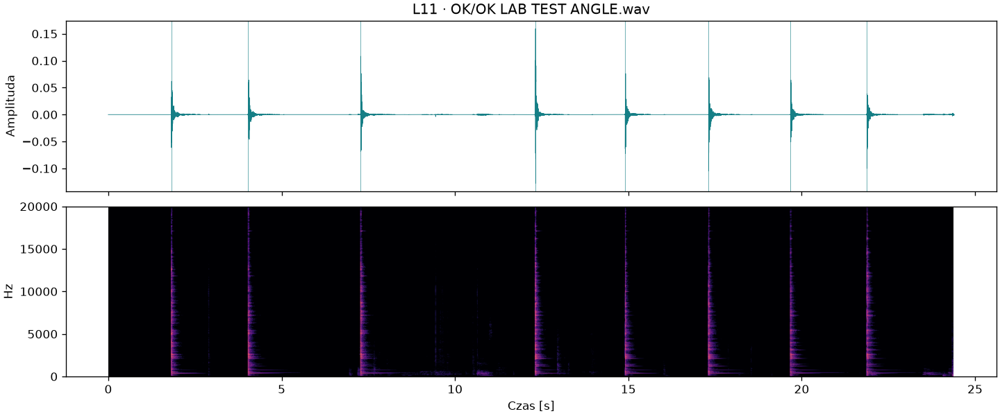
L12 · OK/OK LAB TEST angle 3 one point.wav
38.0 s · 12 przyjętych uderzeń · najdłuższe zero 1.256 s
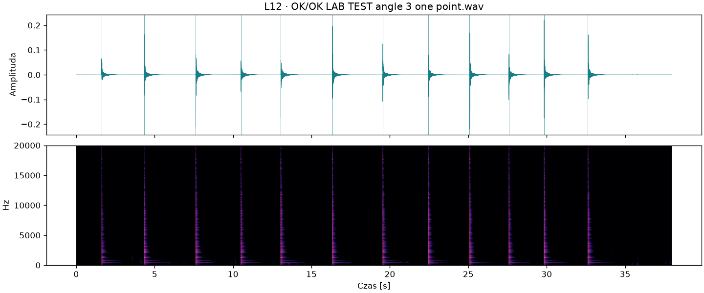
L13 · OK/OK lab test.wav
43.7 s · 21 przyjętych uderzeń · najdłuższe zero 1.646 s
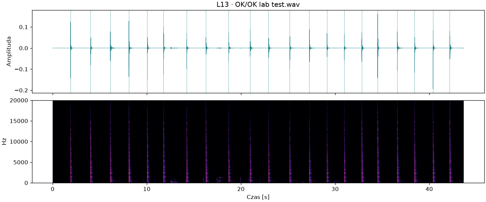